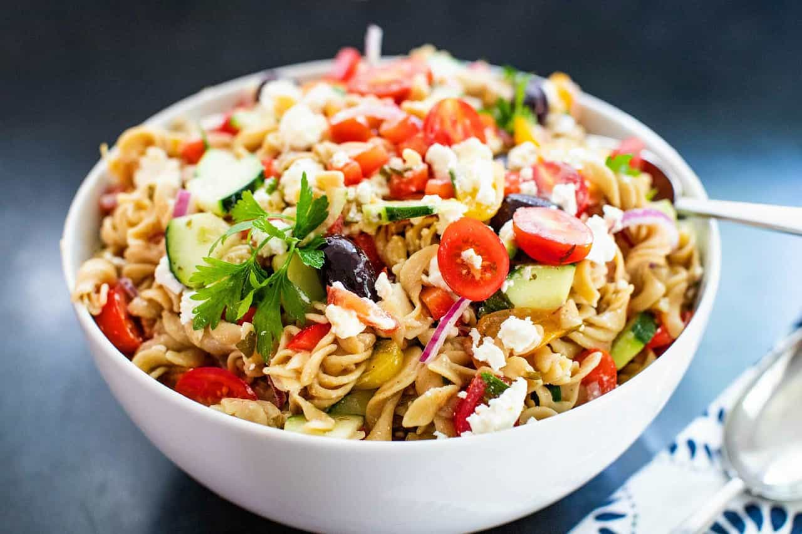

Pasta Salad

Description
- 1 package tri-colored pasta assortment
- 2 large tomatoes, diced
- 1 large cucumber, peeled and diced
- 1 red onion, finely chopped
- 1 bottle italian-style salad dressing
Steps
- Bring a large pot of lightly salted water to a boil. Add pasta and cook for 8 to 10 minutes or until al dente; drain and rinse in cold water.
- In a large bowl combine tomatoes, cucumbers, onion, cooled pasta and Italian dressing. Refrigerate overnight, or for at least 1 hour.